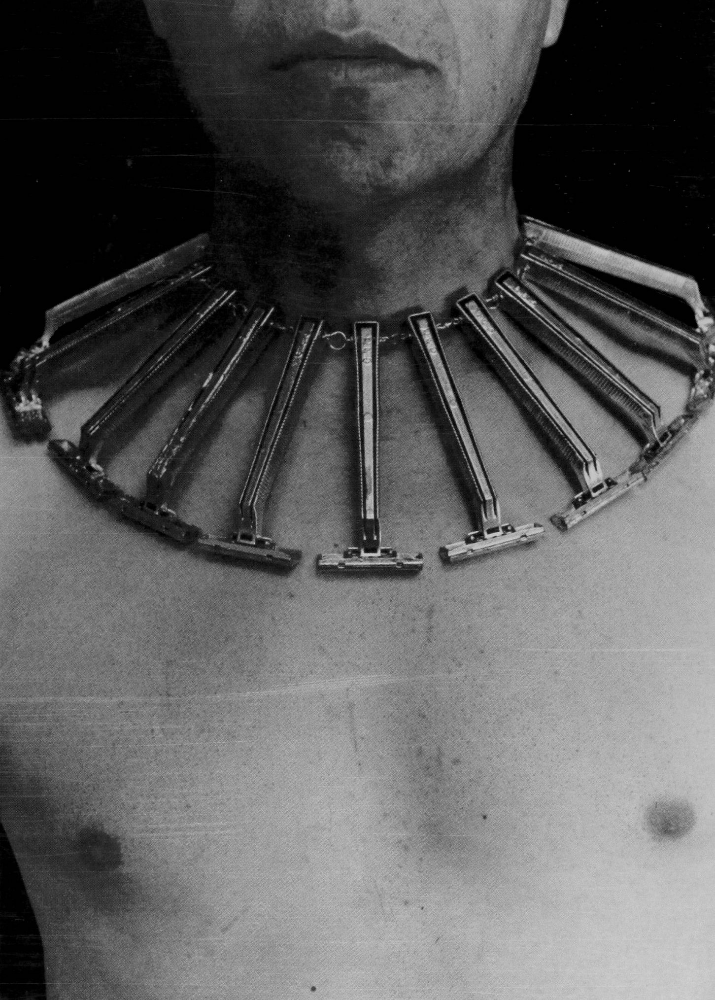

Expresa a un Lemebel en un plano que corta su rostro y pone como objeto de atención un collar compuesto de máquinas de afeitar o afeitadoras, que apuntan hacia todos los rincones de su cuerpo.
Vemos la conexión directa entre las afeitadoras y su torso desnudo, depilado erráticamente, sin demasiada minucia.
La depilación ya es un ejercicio que lo diferenciaría de la mayor cantidad de hombres, en tanto ejercicio femenino, o prescrito socialmente hacia la mujer. La depilación es un indicador de feminidad, y, simultáneamente, un indicador de falta de masculinidad. Esta razón inversamente proporcional de ciertas actividades o características es común en nuestra sociedad patriarcal, en tanto para nuestra cultura occidental conservadora el género es binario y basado en el sexo, soportado en nuestro dimorfismo sexual como especies. En este sentido, todo lo que es masculino a la vez suele ser no-femenino, y viceversa.
Lemebel, como sujeto fuera del binarismo sexual y de género, resulta parte de un colectivo de sujetos no reconocidos, ya que una definición que categorice su condición va en contra del status quo y del repertorio de conceptos que la sociedad posee para definir al uno y a su diferencia.
En este sentido, su cuerpo, su sola presencia es todo un enunciado en contra de una forma de organización de la sociedad, que en parte se sustenta en la diferencia.
Todo lo que representa a Lemebel como ser humano es un ejercicio contrahegemónico de performatividad de género. Su postura homosexual se complementa, a su vez, con su travestismo acérrimo, que significa una constante ruptura con las expectativas estéticas del público, su mera presencia siendo capaz de romper con los cánones establecidos de la diferencia entre géneros y la cisexualidad.
El cuerpo femenino se define socialmente como contraparte del hombre, por ende definida por la diferencia. Constantemente, tanto hombres como mujeres reproducimos discursos y prácticas de género que actúan estas diferencias, con el objetivo de adecuarnos a las expectativas.
Lemebel, como puesta en escena en sí, rompe en la cotidianidad con las prácticas que reproducen el género como concepto solidificado. Su persona, su experiencia del día a día significa un desafío a todo lo instituido, cual performance.
Luego de la vuelta a democracia, Lemebel admite un cese en su producción de performances. Esto va aparejado, como vimos en la cita de Derrida de la clase pasada, en la desaparición de la obra de arte en tanto obra cuando su existencia es un acto necesario: su cuerpo, en tanto performatividad y constante campo de violencia y protesta, reduce la necesidad de expresión a través de performances.
Rodearse de máquinas de afeitar es un acto de protesta contra los objetos que oprimen a ciertos sectores de la población, en tanto son la encarnación material de formas disciplinares que adquirimos socialmente: el orden, la apariencia, la representación del género adscrito, la raza, la moral.
El collar tiene la apariencia de un collar de púas para perros, usado para adiestrarlos a través de reforzamientos negativos. De la misma manera, la interacción social se encarga de reforzar negativamente las prácticas que no satisfacen el status quo mediante la exposición al rechazo. Las ideas que existen en las masas se refuerzan en el intercambio simbólico, reforzando las diferencias y lo “otro” a la misma vez que lo “uno” se define. En este sentido, cosas como la depilación femenina se ven reforzadas por la exposición a símbolos mediáticos tomados como referentes de la imagen de mujer, provocando que la ausencia de depilación se vuelva una antítesis de tal género.
Este diagnóstico social lo llevamos dentro, como un collar que constantemente nos aprieta al cuello, recordándonos qué hacer y qué no hacer.
- En 1987 él y Francisco Casas fundan un colectivo homosexual de arte y de espíritu contestatario, transgresor, Las Yeguas del Apocalipsis, que hará diversas presentaciones, o performances.
- El primer nivel queda a la vista tan pronto nos preguntamos por la modalidad de enunciación de la crónica de Lemebel y reparamos en aquello que la distingue o define. Cuando hablo de «enunciación», lo hago obviamente desde el concepto clásico de enunciación formulado por Émile Benveniste (1977: 82-91), es decir, entendiendo por enunciación «el acto individual de apropiación de la lengua». En otras palabras, el acto individual mediante el cual actualizamos la lengua (que es siempre virtual) y la ponemos en discurso.
- Este exceso, recurrente por lo demás en todas las compilaciones de crónicas de Lemebel, ¿no pone a la dimensión estética de lo cursi al borde de su propia deslegitimación, estética justamente? Sin duda, en Lemebel el exceso es la zona de riesgo de su escritura, y no siempre ha salido de ella ileso.
- La propia elección de su apellido, Lemebel, que es el de su madre, constituye, como lo ha dicho él mismo, un homenaje a su madre, una más de esas madres de las clases populares que asumen roles tutelares frente al abandono o la ausencia de los padres11, pero también otro modo, simbólico incluso, de sellar el vínculo con lo popular.
- Estos sujetos, los del otro lado del poder, los sujetos populares de Lemebel, los habitantes de la «pobla», sólo están en condiciones de desplegar «tácticas» para escamotear el poder, para burlarlo y hacerse de un espacio transitoriamente conquistado. Las «estrategias», es decir, las maniobras que afectan a la estructura del espacio social de las prácticas de vida cotidiana, ya sea para reproducirla o para rediseñarla, son un privilegio de los que están del lado del poder.12
Tolerancia represiva:
“En ocasiones, las obras ‘rupturistas’ permiten que la censura perfeccione sus mecanismos, previniendo futuras incursiones de los temas tachados. Así, por ejemplo, después del Bolívar en topless del pintor Dávila, el Fondart agudizó el ojo con los proyectos que participan. Las intenciones vanguardistas en este país a veces abren una ventana, pero la censura clausura el cielo”.
Minorías y tolerancia:
“Para hablar de minorías hay que entender que no se refiere a una suma matemática, sino a un asunto con el poder. Así, las mujeres, los homosexuales, las lesbianas, los jóvenes, los viejos o los pueblos originarios son minorías. Aunque sean una multitud frente a un solo hombre armado.
“Pero yo no hablo por ellos. Las minorías tienen que hablar por sí mismas. Yo sólo ejecuto en la escritura una suerte de ventriloquía amorosa, que niega el yo, produciendo un vacío deslenguado de mil hablas.
“Este sistema exhibe a veces a las minorías en el marco cristiano de la piedad, como para decir desde la superioridad hetero, blanca, occidental, que “es bueno que aparezcan estas escorias, somos tolerantes, es políticamente correcto”.